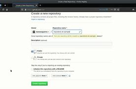
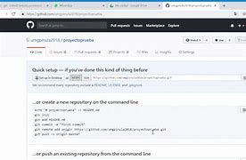

¿que es un repositorio en GIT?
GitHub es una plataforma web adquirida por Microsoft desde el año 2008, que consiste en un “repositorio” creado para alojar en la nube el código informático de las aplicaciones, herramientas y creaciones de software de cualquier programador independiente o desarrollador.
como configurar un repositorio en git
En Configurando Git en un servidor se explicarán todas las opciones disponibles a la hora de configurar el acceso a tu repositorio de Git, y las ventajas e inconvenientes de cada una.
GitHub es tan fácil de usar, que incluso algunas personas usan GitHub para administrar otro tipo de proyectos – como escribir libros. Además de esto, cualquier persona puede inscribirse y ser hospedar un repositorio de código público completamente gratuito, el cual hace que GitHub sea especialmente popular con proyectos de fuente abierta.
